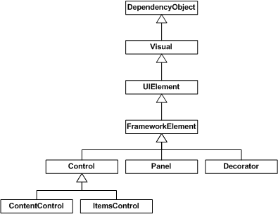

Architecture
This section provides information about the class hierarchy involved in the UI. It covers most of the major subsystems, and describes how they interact.
DependencyObject
See Dependency System Overview for a complete description of DependencyObject functionality.
Visual
As DependencyObject provides a way to store data, the next step is getting pixels drawn to the screen. The Visual class provides for building a tree of visual objects, each optionally containing drawing instructions and metadata about how to render those instructions (clipping, transformation, etc.). Visual is designed to be extremely lightweight and flexible, so most of the features have no public API exposure and rely heavily on protected callback functions.
Visual is the point of connection between the user world and the Renderer system.
Noesis GUI Framework displays data by traversing the data structures managed by the Renderer. These structures, called render nodes, represent a hierarchical display tree with rendering instructions at each node. This tree is only accessible through a messaging protocol. When programming, you create Visual elements, and derived types, which internally communicate to the render tree through this messaging protocol.
There is a very important architectural detail to notice here, the entire tree of visuals and drawing instructions is cached. In graphics terms, we uses a retained rendering system. This enables the system to repaint at high refresh rates without the rendering system blocking on callbacks to user code. This helps prevent the appearance of an unresponsive application.
Another important detail that isn't really noticeable in the diagram is how the system actually performs composition.
Noesis GUI Framework uses a "painter's algorithm" painting model. This means that instead of clipping each component, each component is asked to render from the back to the front of the display. This allows each component to paint over the previous component's display. The advantage of this model is that you can have complex, partially transparent shapes. With today's modern graphics hardware, this model is relatively fast.
A core philosophy is to move to a more declarative, "property centric" model of programming. In the visual system, this shows up in a couple of interesting places.
First, if you think about the retained mode graphic system, this is really moving away from an imperative DrawLine/DrawLine type model, to a data oriented model: new Line()/new Line(). This move to data driven rendering allows complex operations on the drawing instructions to be expressed using properties. The types deriving from Drawing are effectively the object model for rendering.
Second, if you evaluate the animation system, you'll see that it is almost completely declarative. Instead of requiring a developer to compute the next location, or next color, you can express animations as a set of properties on an animation object. These animations can then express the intent of the developer or designer (move this button from here to there in 5 seconds), and the system can determine the most efficient way to accomplish that.
UIElement
UIElement defines core subsystems including Layout, Input, and Events.
In many systems there is either a fixed set of layout models (HTML supports three models for layout; flow, absolute, and tables) or no model for layout (those that only supports absolute positioning). Noesis GUI Framework assumes that developers and designers wanted a flexible, extensible layout model, which could be driven by property values rather than imperative logic. At the UIElement level, the basic contract for layout is introduced: a two phase model with Measure and Arrange passes.
Measure allows a component to determine how much size it would like to take. This is a separate phase from Arrange because there are many situations where a parent element will ask a child to measure several times to determine its optimal position and size. The fact that parent elements ask child elements to measure demonstrates another key philosophy: size to content. All controls support the ability to size to the natural size of their content. This makes localization much easier, and allows for dynamic layout of elements as things resize. The Arrange phase allows a parent to position and determine the final size of each child.
Each input event is converted (usually) to at least two events: a "preview" event and the actual event. All events in Noesis GUI Framework have a notion of routing through the element tree. Events are said to "bubble" if they traverse from a target up the tree to the root, and are said to "tunnel" if that start at the root and traverse down to a target. Input preview events tunnel, enabling any element in the tree an opportunity to filter or take action on the event. The regular (non-preview) events then bubble from the target up to the root.
To take this one step further, UIElement also introduces the notion of CommandBindings. The command system allows developers to define functionality in terms of a command end point (something that implements ICommand). Command bindings enable an element to define a mapping between an input gesture (Ctrl+N) and a command (New). Both the input gestures and command definitions are extensible, and can be wired together at usage time. This makes it trivial, for example, to allow an end user to customize the key bindings that they want to use within an application.
FrameworkElement
FrameworkElement can be looked at in two different ways. It introduces a set of policies and customizations on the subsystems introduced in lower layers. It also introduces a set of new subsystems.
The primary policy introduced by FrameworkElement is around application layout. FrameworkElement builds on the basic layout contract introduced by UIElement and adds the notion of a layout "slot" that makes it easier for layout authors to have a consistent set of property driven layout semantics. Properties like HorizontalAlignment, VerticalAlignment, MinWidth, and Margin (to name a few) give all components derived from FrameworkElement consistent behavior inside of layout containers.
The two most critical things that FrameworkElement introduces are data binding and styles.
The data binding subsystem is a simple way to express that you want one or more properties from a given element to be bound to a piece of data. Noesis GUI Framework has full support for property binding. One of the most interesting features of data binding is the introduction of data templates. Data templates allow you to declaratively specify how a piece of data should be visualized. Instead of creating a custom user interface that can be bound to data, you can instead turn the problem around and let the data determine the display that will be created.
Styling is really a lightweight form of data binding. Using styling you can bind a set of properties from a shared definition to one or more instances of an element. Styles get applied to an element either by explicit reference (by setting the Style property) or implicitly by associating a style with the type of the element.
Control
Control's most significant feature is templating. Remplating allows a control to describe its rendering in a parameterized, declarative manner. A ControlTemplate is really nothing more than a script to create a set of child elements, with bindings to properties offered by the control.
Control provides a set of stock properties, Foreground, Background, Padding, to name a few, which template authors can then use to customize the display of a control. The implementation of a control provides a data model and interaction model. The interaction model defines a set of commands (like Close for a window) and bindings to input gestures (like clicking the red X in the upper corner of the window). The data model provides a set of properties to either customize the interaction model or customize the display (determined by the template).
This split between the data model (properties), interaction model (commands and events), and display model (templates) enables complete customization of a control's look and behavior.
A common aspect of the data model of controls is the content model. If you look at a control like Button, you will see that it has a property named "Content" of type Object. This property would typically be a string, however that limits the type of content you can put in a button. Content for a button can either be a simple string, a complex data object, or an entire element tree. In the case of a data object, the data template is used to construct a display.
ContentControl
Content controls are simply controls that are constrained to contain a single item. A ContentControl's Content property is typically used to specify the information that appears inside a control when it is rendered. For example, a Button's content is the text, image or other element that appears inside the button when it is displayed. The Content property supports both text and UIElement content. Because a content control's single item can be any arbitrary object, the control can contain a potentially large tree of objects. There just can only be one direct child.
Besides Content, the other interesting member of the ContentControl class is the boolean HasContent property. This simply returns false if Content is null, or true otherwise.
ItemsControl
Defines a control which can contain an unbounded collection of items rather than just a single piece of content. ItemsControl stores its content in an Items property. Each item can be an arbitrary object, which by default gets rendered just like it would inside a content control.
The Items property is read-only. This means that you can add objects to the initially empty collection or remove objects, but you can't point Items to an entirely different collection. ItemsControl has a separate property that supports filling its items with an existing arbitrary collection, called ItemsSource.
Besides these properties, the other interesting members of the ItemsControl are the HasItems property (a read-only boolean property that makes it easy to act upon the control's empty state from declarative XAML) and the DisplayMemberPath property (a string property that can be set to the name of a property on each item (or a more complicated expression) that changes how each object gets rendered).
Panel
It is the base class for all layout containers. It stores its content in the Children property using a collection of UIElement objects.
Decorator
Another container base class but with a single Child content.